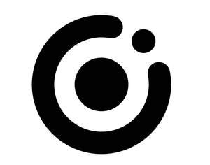

Trade Mark Journal No.2026/006 6 February 2026
UK00004297507 19 November 2025 (9,21,42)

- Class 9
- Recorded computer programs; computer memory devices; computer software applications, downloadable; security surveillance robots; Theft prevention installations, electric; computer networking and data communications equipment; artificial intelligence software for surveillance; Downloadable software applications for mobile phones; video surveillance cameras; computer hardware for Internet Protocol (IP) video surveillance; wireless communication devices; Remote monitoring apparatus; downloadable computer software for remote monitoring and analysis; Security surveillance apparatus; security surveillance hardware; integrated circuits; Facial recognition apparatus; biometric scanners; Electric and electronic video surveillance installations; Safety, security, protection and signalling devices.
- Class 21
- Bird feeders; bird baths; food containers for birds; bird feeding tables; bird cages; rings for identifying birds; perches for bird cages; bird cages for domestic birds; automatic pet feeders; automatic pet feeding bowls; automatic pet waterers; electronic pet feeders; Animal-activated animal feeders; animal activated livestock waterers; pet feeding and drinking bowls; cages for household pets; mangers for animals; rings for birds; drinking troughs for animals; feeding troughs.
- Class 42
- Platform as a Service (PaaS); Research and development of new products for others; electronic data back-up; computer software updating; Conversion of data or documents from physical to electronic media; computer systems analysis; creating and maintaining websites for others; research in the field of artificial intelligence technology; electronic data storage; monitoring of computer system operation by remote access; data encryption services; rental of web servers; Consultancy in the design and development of computer hardware; software as a service [SaaS]; design, development, installation and maintenance of computer software; cloud computing; artificial intelligence as a service [AIaaS]; information technology [IT] support services [troubleshooting of software]; Cloud-based data protection services; development of computer platforms.
KIWIBIT INC.
Representative: Trademarkit LLP